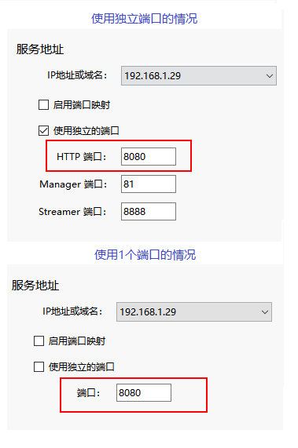

new DigitalTwinPlayer(host, option)
DigitalTwinPlayer类的构造函数
Parameters:
| Name | Type | Description |
|---|---|---|
host |
string | 服务地址，格式如下 IP:Port，例如：  |
option |
object | 初始化选项，支持以下属性（都是可选）
|
Members
-
fullscreen :boolean
-
设置是否进入全屏状态，如果为true则全屏显示视频流，如果为false则退出全屏
Type:
- boolean
-
fullscreen :boolean
-
获取当前是否处于全屏状态
Type:
- boolean
Methods
-
destroy(reason)
-
销毁
Parameters:
Name Type Description reasonstring 可选参数，指定原因，如果初始化DigitalTwinPlayer时指定了显示调试信息，可以在界面上显示销毁的原因。
-
getAPI()
-
获取DigitalTwinAPI接口
-
getHost()
-
获取服务器的地址（ip:port）
-
getInstanceInfo()
-
获取当前所连接的实例信息
-
getVideoElement()
-
获取用于播放Cloud视频流的video元素
Returns:
Video元素
-
getVideoElementSize()
-
获取Video元素的尺寸
Returns:
包含width,height属性的object对象
-
getVideoSize()
-
- Deprecated:
-
- 已废弃，请使用getVideoStreamSize代替
-
getVideoStreamSize()
-
获取视频流的尺寸
Returns:
包含width,height属性的object对象
-
resize()
-
重新调整布局
-
screen2World(x, y, fn)
-
屏幕坐标转为投影坐标 请参考二次开发：四种坐标的区别。
注意：这里的屏幕坐标是相对Video元素的坐标，坐标原点位于Video元素的左上角。Parameters:
Name Type Description xnumber 屏幕坐标值x
ynumber 屏幕坐标值y
fnfunction 可选的回调函数，请参考二次开发：异步接口调用方式
-
setActionEventEnabled(bEnable)
-
设置是否开启键盘、鼠标交互事件的回调功能
Parameters:
Name Type Description bEnableboolean -
setEnableEventSync(bEnabled)
-
用于开关交互事件同步功能
Parameters:
Name Type Description bEnabledboolean 是否开启
-
<async> setInstanceOptions(o)
-
设置实例选项，调用此接口可以实现在不刷新页面的情况下切换使用的实例或工程文件
Parameters:
Name Type Description oobject 实例选项，支持以下属性：
- iid 实例ID（如果不需要切换实例，可以不用设置此属性）
- pid 工程ID（如果不需要切换工程，可以不用设置此属性）
Returns:
如果设置的参数与当前的实例的参数相同，则返回false, 否则返回true
-
setKeyEventTarget(newVal)
-
设置键盘交互事件的目标对象
Parameters:
Name Type Description newValstring 可选的值：document / video / none，具体含义请参考DigitalTwinPlayer对象的初始化方法
-
setResolution(w, h)
-
设置视频流的尺寸，如果云渲染后台启用了自适应，那么视频流的分辨率也会自动调整。 如果没有启用自适应，则调用不起作用。
注意：- 视频流支持的最大分辨率为4096*4096，如果设置的宽高超过这个大小，将自动按比例缩放到合适的大小
- 因为移动端都是高分屏，通常是CSS分辨率的几倍，所以实际设置的宽高会乘以这个系数（devicePixelRatio）
Parameters:
Name Type Description wnumber 宽度
hnumber 高度
Returns:
如果云渲染后台没有开启自适应，或者设置的分辨率与当前的分辨率相同，则返回undefined。 否则返回实际设置的分辨率数组，例如： [3846,2160]
-
<async> world2Screen(x, y, z, fn)
-
投影坐标转为屏幕坐标 请参考二次开发：四种坐标的区别
注意：这里的屏幕坐标是相对Video元素的坐标，坐标原点位于Video元素的左上角。Parameters:
Name Type Description xnumber 世界坐标点x
ynumber 世界坐标点y
znumber 世界坐标点z
fnfunction 可选的回调函数，请参考二次开发：异步接口调用方式